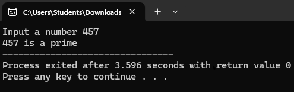
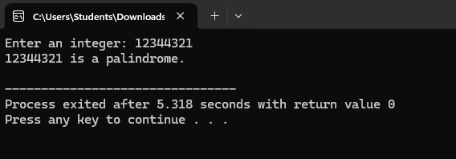
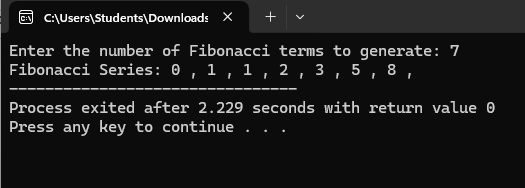
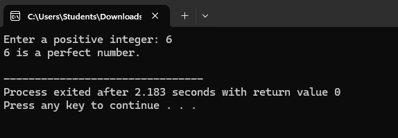

Chapter 5 – Programming Concepts and Logics
Programming concepts and logic form the backbone of software development, enabling programmers to create efficient and effective code. The C programming language, developed in the early 1970s, is one of the most widely used languages due to its efficiency, portability, and powerful features. It provides a structured approach to programming, allowing developers to define data types, control flow, and manage memory effectively. Key concepts in C include variables, data types, operators, control structures (such as loops and conditionals), and functions, which help organize code into reusable components. Understanding these concepts is crucial for developing algorithms and solving problems systematically. C's influence extends beyond its own applications, as it has laid the groundwork for many modern programming languages, making it an essential language for aspiring programmers to learn..
Introduction to Programming Languages
Questions and Answers
1. What is Programming?
Programming is the process of writing instructions (code) that a computer can execute to perform specific tasks. It involves problem-solving, logic, and algorithm development to create software applications.
Programming is done using different languages such as:
- Python: Easy to learn and widely used for data science, web development, and automation.
- C++: Used for system programming, game development, and competitive coding.
- Java: Used for mobile applications (Android), enterprise applications, and backend development.
- JavaScript: Primarily used for web development and interactive websites.
Programming requires logical thinking, problem-solving skills, and an understanding of syntax and semantics.
2. What is an Algorithm?
An algorithm is a step-by-step procedure or set of rules for solving a problem in a finite number of steps. It is used in programming to define logic before writing actual code.
Characteristics of a good algorithm:
- Definiteness: Each step must be clear and unambiguous.
- Finiteness: It must have a finite number of steps.
- Effectiveness: Each step should be simple and executable.
- Input & Output: It should take input and produce an output.
Example Algorithm: Finding the sum of two numbers
Step 1: Start
Step 2: Input two numbers (A, B)
Step 3: Compute Sum = A + B
Step 4: Display Sum
Step 5: Stop
3. What is a Flowchart?
A flowchart is a graphical representation of an algorithm using symbols to illustrate steps and decision-making in a program.
Common flowchart symbols:
- Oval: Start/End
- Parallelogram: Input/Output
- Rectangle: Process (Calculation or Action)
- Diamond: Decision (Yes/No or True/False)
- Arrow: Flow of execution
Flowcharts help programmers visualize logic before coding, making debugging easier.
4. What are Variables and Data Types?
A variable is a named storage location in memory used to hold data. The value of a variable can change during program execution.
Data types define the type of data that a variable can hold. Common data types include:
- Integer (int): Holds whole numbers (e.g., 5, -10).
- Float (float/double): Holds decimal numbers (e.g., 3.14, -2.5).
- Character (char): Holds a single character (e.g., 'A', '5').
- String: Holds a sequence of characters (e.g., "Hello").
- Boolean (bool): Holds True or False values.
Example in Python:
age = 20 # Integer
price = 10.99 # Float
name = "Alice" # String
is_student = True # Boolean
5. What are Conditional Statements?
Conditional statements allow a program to make decisions based on conditions. The main types are:
- If Statement: Executes a block of code if the condition is true.
- If-Else Statement: Executes one block if the condition is true, otherwise executes another block.
- Nested If: If statements inside other if statements.
- Switch Case (in some languages): Used as an alternative to multiple if-else statements.
Example in Python:
age = 18
if age >= 18:
print("You are eligible to vote.")
else:
print("You are not eligible to vote.")
6. What are Loops in Programming?
Loops are used to execute a block of code multiple times. The main types of loops are:
- For Loop: Repeats a block of code a specific number of times.
- While Loop: Repeats while a condition is true.
- Do-While Loop (in some languages): Executes at least once before checking the condition.
Example in Python (For Loop):
for i in range(1, 6):
print(i)
This prints numbers from 1 to 5.
7. What are Functions in Programming?
A function is a reusable block of code that performs a specific task. Functions help in modular programming and avoid repetition.
Types of Functions:
- Built-in Functions: Predefined functions like print(), len(), etc.
- User-defined Functions: Functions created by the programmer.
Example in Python:
def greet(name):
print("Hello, " + name + "!")
greet("Alice")
8. What is an Array?
An array is a data structure that stores multiple values of the same data type in a single variable.
Example of an array in Python (using a list):
numbers = [10, 20, 30, 40]
print(numbers[0]) # Output: 10
Arrays allow efficient storage and manipulation of data.
9. What is Object-Oriented Programming (OOP)?
Object-Oriented Programming (OOP) is a programming paradigm that uses objects to structure code.
Key OOP Concepts:
- Class: A blueprint for creating objects.
- Object: An instance of a class.
- Encapsulation: Hiding data within an object.
- Inheritance: Reusing code by inheriting properties from another class.
- Polymorphism: One function behaving differently based on the context.
10. What is C Programming?
C is a general-purpose, procedural programming language developed by Dennis Ritchie in 1972. It is widely used for system programming, game development, and embedded systems.
C is known for its efficiency, portability, and use of structured programming techniques.
11. What are the Basic Features of C?
C has several important features:
- Simple and Efficient: Provides direct control over hardware.
- Portable: Code can be compiled on different platforms.
- Structured Language: Uses functions and loops for better organization.
- Supports Low-level Manipulation: Allows direct access to memory.
- Fast Execution: Used in performance-critical applications.
12. What is the Basic Structure of a C Program?
A C program consists of:
- Preprocessor Directives: Instructions like #include.
- Main Function: int main() where execution starts.
- Variables and Data Types: Used to store values.
- Functions: Blocks of reusable code.
- Statements and Expressions: Instructions for computation.
Example:
#includeint main() { printf("Hello, World!"); return 0; }
13. What are Data Types in C?
Data types define the type of data stored in a variable.
- int: Integer numbers (e.g., 10, -5).
- float: Decimal numbers (e.g., 3.14, -0.99).
- char: Single character (e.g., 'A', '5').
- double: Larger decimal numbers.
- void: No value (used for functions).
Example:
int age = 18;
float price = 99.99;
char grade = 'A';
14. What are Operators in C?
Operators perform operations on variables and values.
- Arithmetic Operators: +, -, *, /, %
- Relational Operators: ==, !=, <,>, <=,>=
- Logical Operators: &&, ||, !
- Bitwise Operators: &, |, ^, ~, <<,>>
- Assignment Operators: =, +=, -=, *=, /=, %=
Example:
int a = 5, b = 2;
int sum = a + b; // 7
int isEqual = (a == b); // 0 (false)
15. What are Conditional Statements in C?
Conditional statements control the flow of a program based on conditions.
- if: Executes a block if a condition is true.
- if-else: Executes one block if true, another if false.
- else-if: Checks multiple conditions.
- switch-case: Alternative to multiple if-else.
Example:
int num = 10;
if (num > 0) {
printf("Positive");
} else {
printf("Negative");
}
1. To Check if input number is prime or not
#include <stdio.h>
int main(){
int n, i, count=0;
printf("Input a number");
scanf("%d",&n);
for (i=1;i<=n;i++)
{
if(n%i==0){
count++;
}
}
if(count==2){printf("%d is a prime",n);}
else{printf("%d is not a prime",n);
}
return 0;
}
Output
2.To find factorial of give number
#include <stdio.h>
int main()
{
int n,fact=1,i;
printf("Enter the number");
scanf("%d",&n);
if(n<0){printf("Dont put n=0");
}
else{for (i=n;i>0;i--)
{fact=fact*i;
}
printf("factorial=%d",fact);
}
return 0;
}
Output

3. Check input number is palindrome or not
#include <stdio.h>
int main() {
int number, originalNumber, rev = 0, remainder;
printf("Enter an integer: ");
scanf("%d", &number);
originalNumber = number;
while (number != 0) {
remainder = number % 10;
rev = rev * 10 + remainder;
number = number/10;
}
if (originalNumber == rev) {
printf("%d is a palindrome.\n", originalNumber);
} else {
printf("%d is not a palindrome.\n", originalNumber);
}
return 0;
}
Output
4. To generate fibbonachi sequence
#include <stdio.h>
int main() {
int n, a = 0, b = 1,c,i;
printf("Enter the number of Fibonacci terms to generate: ");
scanf("%d", &n);
printf("Fibonacci Series: ");
for (i = 0; i < n; i++) {
if (i <= 1) {
c = i;
} else {
c = a+ b;
a= b;
b = c;
}
printf("%d , ",c);
}
return 0;
}
Output
5. To check if input number is perfect number
#include <stdio.h>
int main() {
int number, sum = 0,i;
printf("Enter a positive integer: ");
scanf("%d", &number);
if (number <= 0) {
printf("It is not a perfect number");
}
for ( i = 1; i < number; i++) {
if (number % i == 0) {
sum += i;
}
}
if (sum == number) {
printf("%d is a perfect number.\n", number);
} else {
printf("%d is not a perfect number.\n", number);
}
return 0;
}
Output
Iterative Control Structures in C
1. for loop
Description: The for loop is used when the number of iterations is known beforehand.
Syntax:
for (initialization; condition; increment/decrement) {
// Code to be executed
}
Example:
for (int i = 0; i < 5; i++) {
printf("%d\n", i);
}
This loop prints the values from 0 to 4.
2. while loop
Description: The while loop is used when the number of iterations is not known and depends on a condition.
Syntax:
while (condition) {
// Code to be executed
}
Example:
int i = 0;
while (i < 5) {
printf("%d\n", i);
i++;
}
This loop also prints the values from 0 to 4.
3. do-while loop
Description: The do-while loop guarantees that the block of code will execute at least once.
Syntax:
do {
// Code to be executed
} while (condition);
Example:
int i = 0;
do {
printf("%d\n", i);
i++;
} while (i < 5);
This loop will also print the values from 0 to 4.
Arrays in C
An array is a collection of elements of the same type.
Characteristics
Fixed Size
Homogeneous Elements
Zero-Based Indexing
Contiguous Memory Allocation
Types of Arrays
- One-Dimensional Array
- Two-Dimensional Array
- Multi-Dimensional Array
Syntax
- One-Dimensional:
data_type array_name[array_size]; - Two-Dimensional:
data_type array_name[row_size][column_size]; - Multi-Dimensional:
data_type array_name[size1][size2][size3]...;
Example Code
#include <stdio.h>
int main() {
// One-Dimensional Array
int oneDArray[5] = {1, 2, 3, 4, 5};
// Two-Dimensional Array
int twoDArray[3][3] = {
{1, 2, 3},
{4 , 5, 6},
{7, 8, 9}
};
// Multi-Dimensional Array
int multiDArray[2][2][2] = {
{
{1, 2},
{3, 4}
},
{
{5, 6},
{7, 8}
}
};
// Print One-Dimensional Array
printf("One-Dimensional Array:\n");
for (int i = 0; i < 5; i++) {
printf("%d ", oneDArray[i]);
}
printf("\n");
// Print Two-Dimensional Array
printf("Two-Dimensional Array:\n");
for (int i = 0; i < 3; i++) {
for (int j = 0; j < 3; j++) {
printf("%d ", twoDArray[i][j]);
}
printf("\n");
}
// Print Multi-Dimensional Array
printf("Multi-Dimensional Array:\n");
for (int i = 0; i < 2; i++) {
for (int j = 0; j < 2; j++) {
for (int k = 0; k < 2; k++) {
printf("%d ", multiDArray[i][j][k]);
}
}
}
printf("\n");
return 0;
}